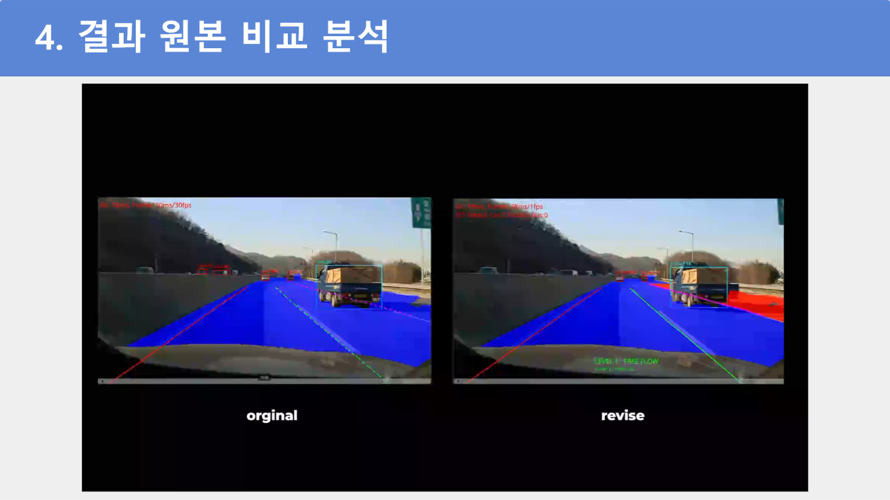

ITS 차량 카운터와 후처리
track_id와class_id기반 차종별 집계- 새로운 추론 timestamp에서만 카운터 갱신
- Free-space 밖의 객체와 작은 원거리 검출 제외
- 통계 상태 관리와 결과 파이프라인 연결
TEAM PROJECT · ON-DEVICE EDGE AI
APACHE6 NPU의 차량 검출 결과와 ByteTrack을 이용해 차종별 통행량을 집계했습니다. 구현 과정에서 분류 변화로 Track ID가 끊기는 현상을 발견하고, 코드 구조를 분석해 후처리 보완과 개선 방향을 정리했습니다.

PROJECT CONTEXT
차량과 도로 영역을 NPU로 추론하고, 추적 결과를 차종별 통계와 혼잡도 정보로 변환하는 실시간 파이프라인을 구성했습니다.
MY CONTRIBUTION
팀 프로젝트 결과 전체가 아니라 제가 맡은 코드와 분석 범위를 기준으로 정리했습니다.
track_id와 class_id 기반 차종별 집계협업 범위 차량 통계 결과를 기존 OpenGL OSD 출력 경로에 연결했습니다. OSD 모듈 구현과 텍스트의 세부 위치 조정은 팀원이 담당했습니다.
01
모델이 같은 차량을 원거리에서 car와 truck으로 번갈아 분류했습니다. 차종별로 Tracker 인스턴스를 생성하는 구조에서는 분류가 바뀔 때 추적 상태가 이어지지 않아 새로운 Track ID가 부여될 수 있었습니다.
02
실제 차량은 하나지만 카운터가 서로 다른 ID를 신규 차량으로 판단해 중복 집계할 가능성이 생겼습니다. 도로 영역을 구분하지 않으면 반대 차선의 차량까지 목표 교통량에 포함되는 문제도 확인했습니다.
03
바운딩 박스의 하단 중심점을 Free-space 마스크와 대조해 주행 가능 영역 안의 차량만 집계했습니다. 렌더링 주기와 NPU 추론 주기의 차이 때문에 같은 결과를 반복 처리하지 않도록 timestamp 조건도 연결했습니다.
VIDEO EVIDENCE
각 영상은 PPT에 임베딩된 원본을 분리한 자료입니다. 재생이 제한된 환경에서는 poster 이미지로 주요 장면을 확인할 수 있습니다.
차량 통계, 혼잡도와 갓길 영역을 기존 NPU 실행 화면에 연결한 결과입니다.
조도와 노면 변화에 따라 도로 경계와 갓길 마스크가 흔들리는 현상입니다.
같은 차량의 분류가 바뀌면서 추적 연속성이 끊기는 핵심 문제입니다.
10초 누적 방식의 시간차와 갓길 정차 차량의 BBox가 검출되지 않는 한계를 확인했습니다.
RESULT & LEARNING
차량 검출 결과를 통계로 연결하고 도로 밖 객체를 제외하는 후처리를 적용했습니다. 동시에 모델 분류와 Tracker 구조가 중복 집계에 미치는 영향을 분석해 다음 개선의 기준을 남겼습니다.
차종별 누적 수와 10초 구간 통계를 Wayland 화면에 전달할 수 있는 흐름을 구성했습니다.
Free-space의 접지점 판정을 이용해 반대 차선과 도로 밖 객체의 통계 유입을 줄였습니다.
Track ID 연속성 문제는 후처리만으로 완전히 해결하기 어려우며 Tracker 생성 단위의 변경이 필요하다고 판단했습니다.
공개 범위 저장소와 제조사 SDK는 비공개 자료이므로 코드 원문과 GitHub 링크를 제공하지 않습니다. 이 페이지는 공개 가능한 역할, 동작 구조와 확인 결과만 설명합니다.